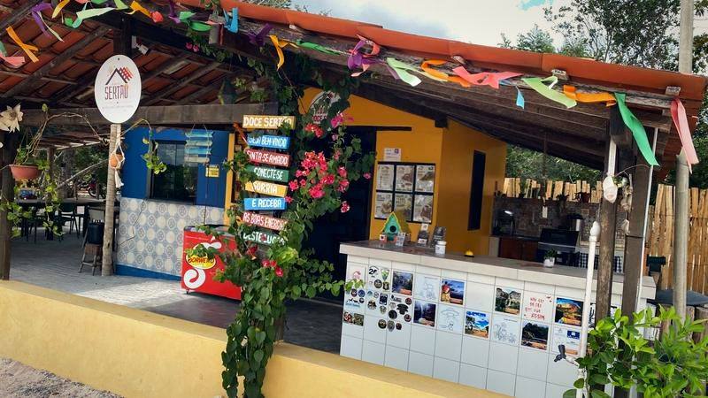
Em frente ao Doce Sertão Residencial
Fazenda Doce Sertão
Cafeteria, o tradicional caldo de cana, o Café Eu e Tu, o Camping Doce Sertão e espaços de convivência, alimentação e contato com a natureza.
Também é ponto próximo de convivência e apoio para quem tem unidade ou mora no Residencial. Aqui funcionam o escritório administrativo e a cafeteria; o nosso restaurante está em construção.
Cafeteria Doce Sertão
Cafés especiais com o Café Eu e Tu, nossa marca própria, o tradicional caldo de cana, pastel, bolo e outras delícias, servidos no local.
- Horário
- Todos os dias, das 9h às 17h
- Para comer
- Macaxeira com carne de sol, queijo coalho com mel de cana, pão de queijo, bolo de cenoura com calda de chocolate, pastéis salgados e doces
- Para beber
- Caldo de cana, sucos, kombucha, cervejas, vinhos de Morro do Chapéu e os drinks da casa
Quase sempre tem novidade do dia, fora do cardápio — vale perguntar o que tem hoje.
Ainda não servimos almoço: o nosso restaurante está em construção. Na cafeteria tem macaxeira com carne de sol e outros petiscos, como queijo coalho com mel de cana e pastéis.
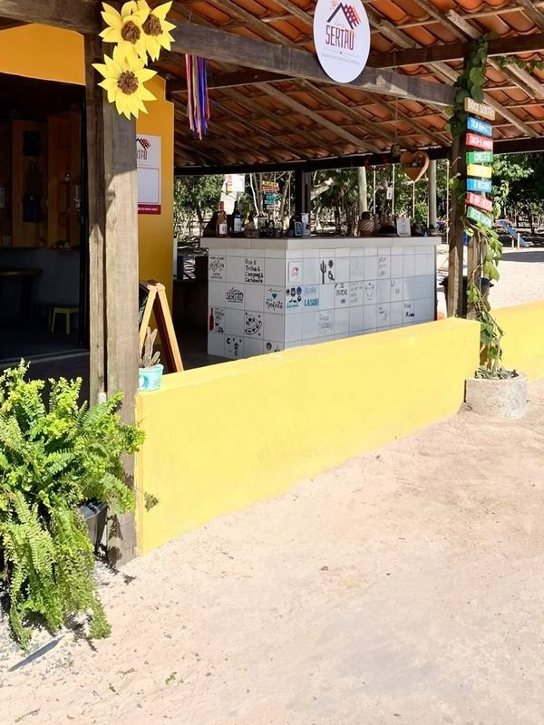
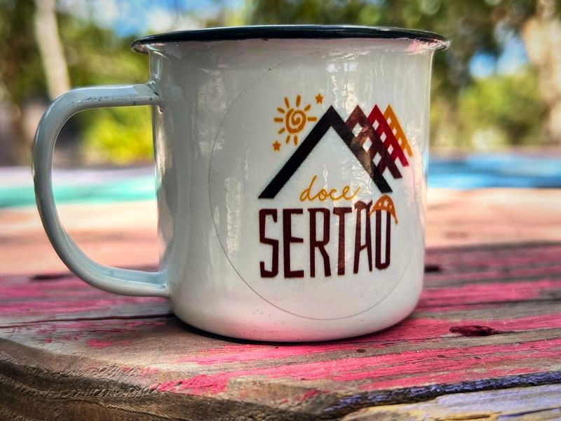
Cardápio da cafeteria
Cafés
- Café de Mainha coado V60R$ 12
- Café de Mainha prensa francesa ou italianaR$ 10
Dicumê
- Carne de sol com mandiocaR$ 40
- Queijo coalho com mel de canaR$ 30
- Pão de queijo kit com 8 unidades · acompanha doce de leite e requeijão cremosoR$ 30
- Bolo de cenoura fatia · com calda de chocolateR$ 10
- Pastel salgado carne, frango ou queijoR$ 15
- Pastel doce recheio de doce de leiteR$ 15
Dibebê
- Refrigerante lataR$ 6
- Refrigerante Coca-Cola lataR$ 8
- ÁguaR$ 4
- Água com gásR$ 5
- H2OR$ 8
- Heineken long neckR$ 10
- Cerveja em lataR$ 8
- Cerveja artesanal 600 mlR$ 25
- Suco de caixinhaR$ 4
- Suco de uva integral VAZR$ 15
- Kombucha TIMO de Morro do ChapéuR$ 20
- Caldo de canaR$ 15
- Drink Doce Sertão sem álcool · café, limão e caldo de canaR$ 15
- Drink Doce Sertão com álcool · café, limão, caldo de cana e cachaça de caféR$ 20
- Vinhos de Morro do Chapéu VAZ · Reconvexo · Sertâniaconsultar
Preços de referência, sujeitos a alteração. Quase sempre tem novidade do dia, fora do cardápio.
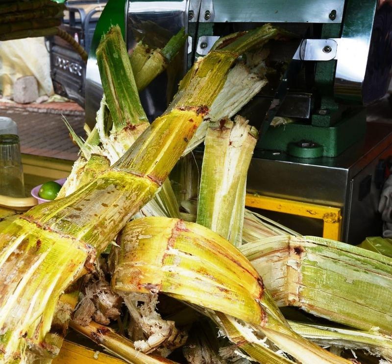
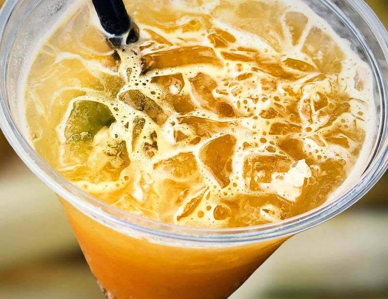
Caldo de cana
O caldo de cana é tradição da casa e está na origem do Doce Sertão: tudo começou com uma pequena moenda de cana embaixo de uma árvore, onde quem passava parava.
Caldo de cana todos os dias, no próprio local.
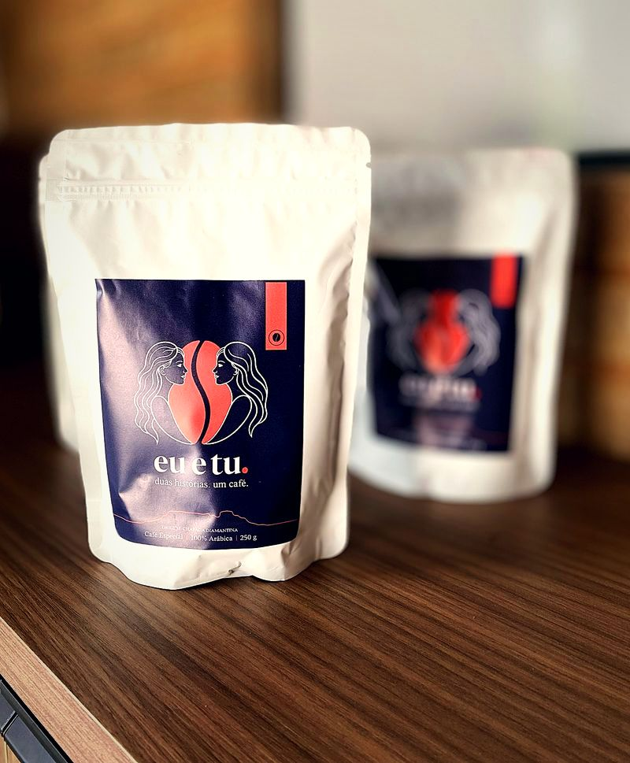
Nossa marca própria
Café Eu e Tu
duas histórias. um café.
Café especial para tomar aqui, na cafeteria, e para levar para casa ou presentear.
- Café especial
- 100% arábica
- Origem Chapada Diamantina
- Pacote de 250 g
À venda na cafeteria da Fazenda.
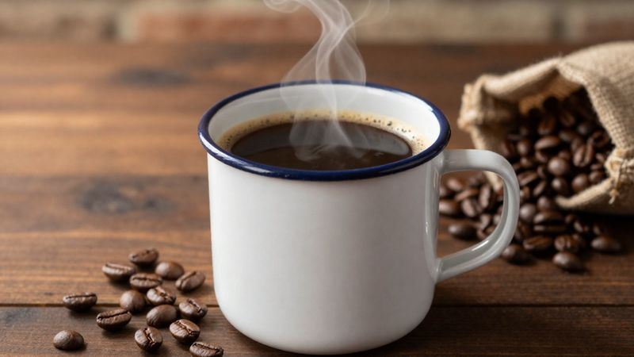
Café regional para grupos
Para grupos, organizamos um café regional sob demanda, com cardápio combinado com antecedência. Fale com a gente pelo WhatsApp com a quantidade de pessoas e a data.
Convivência
Espaços de convivência, alimentação e contato com a natureza.
Temos dois moradores especiais soltos no espaço: os cachorros Caramela e Lobinho.
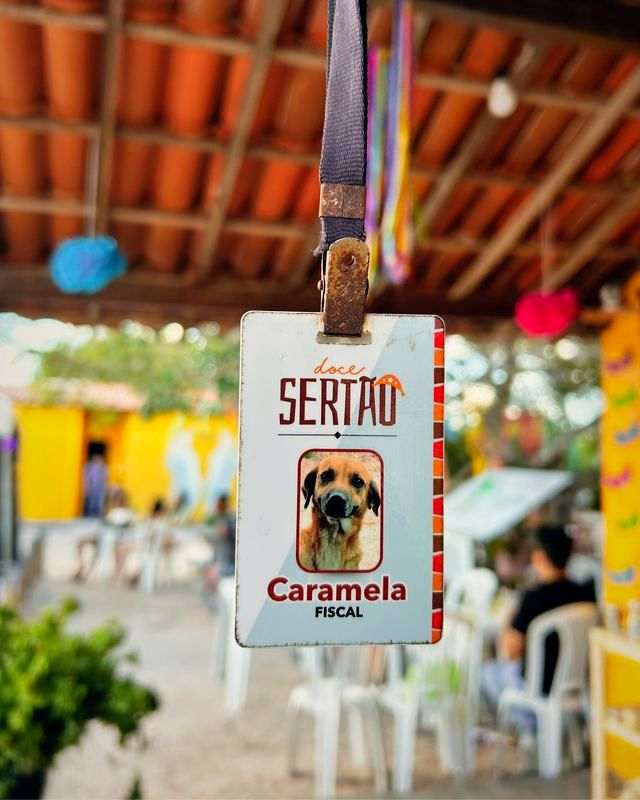
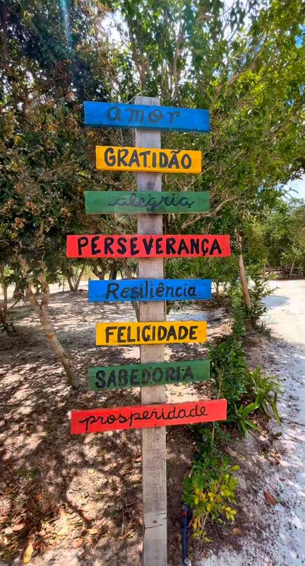
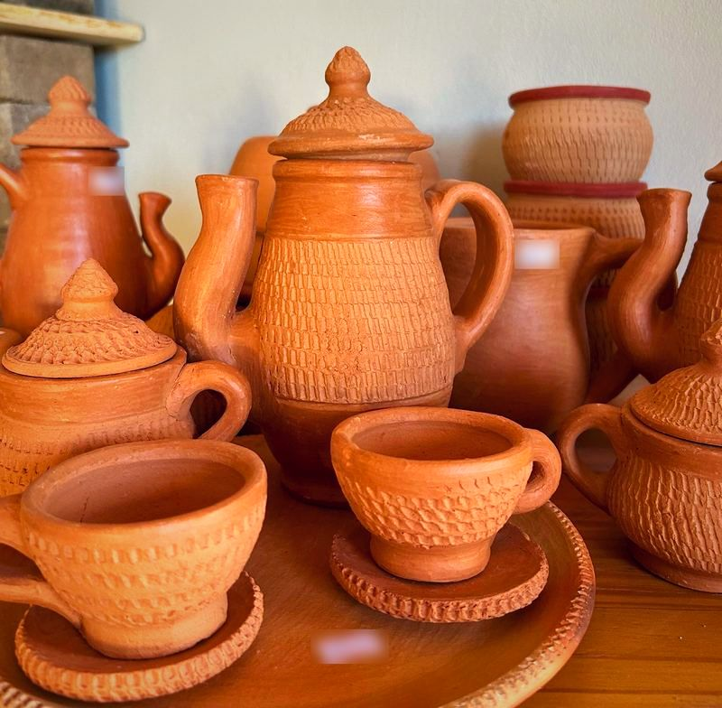
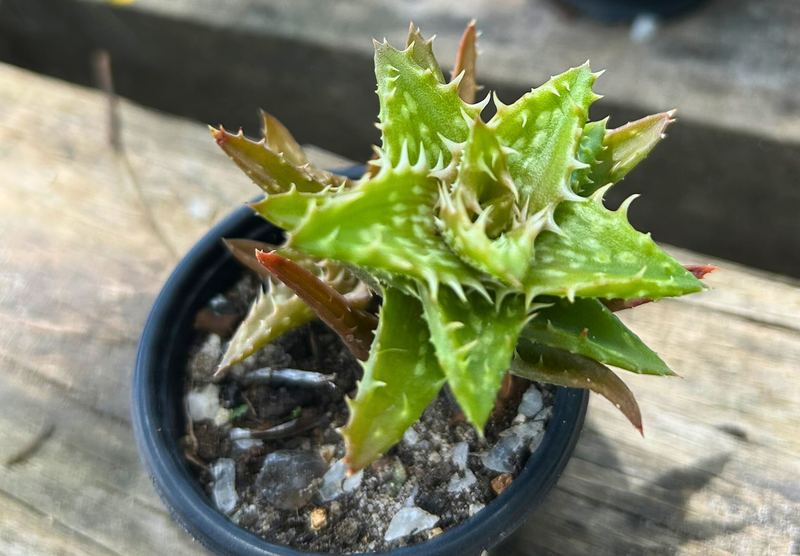
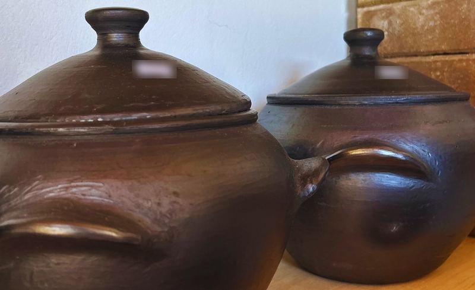
Um pouco do espaço
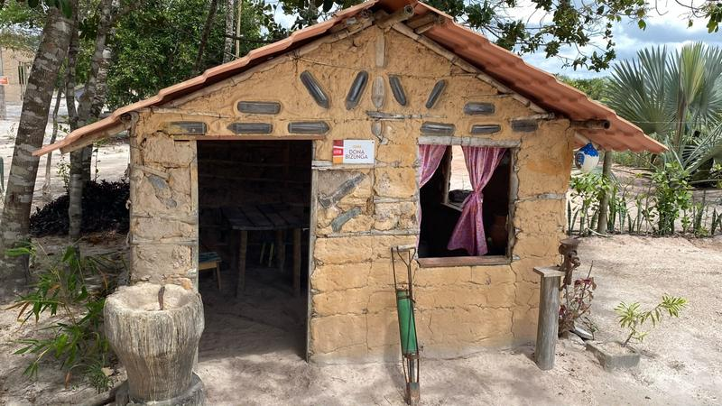
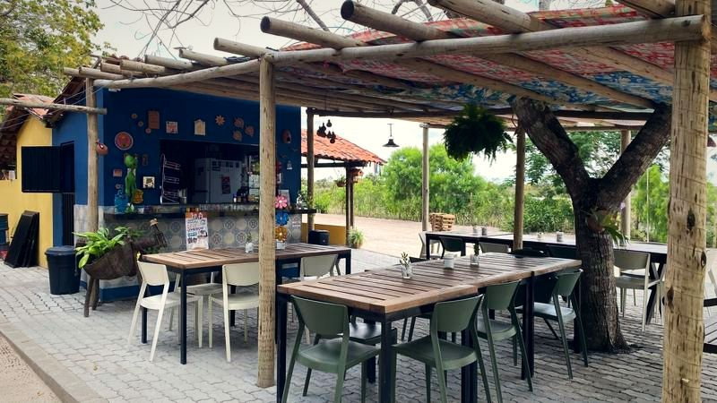
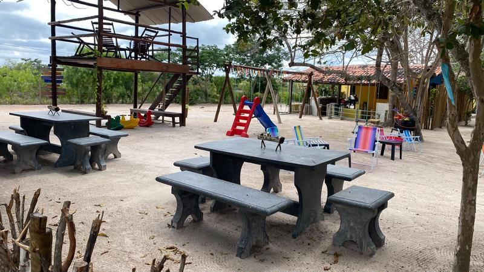
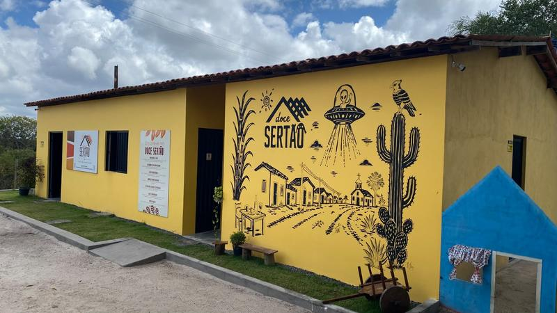
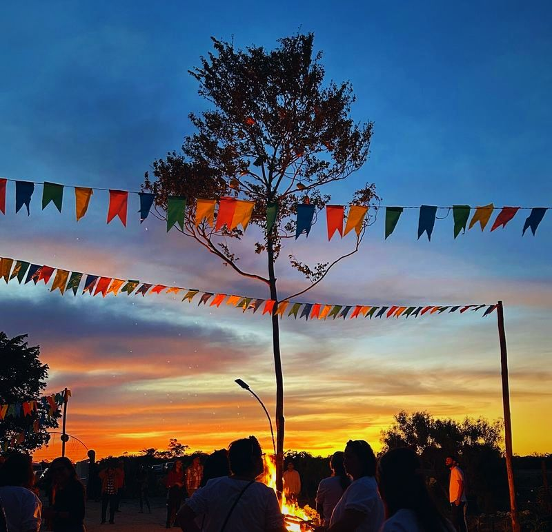
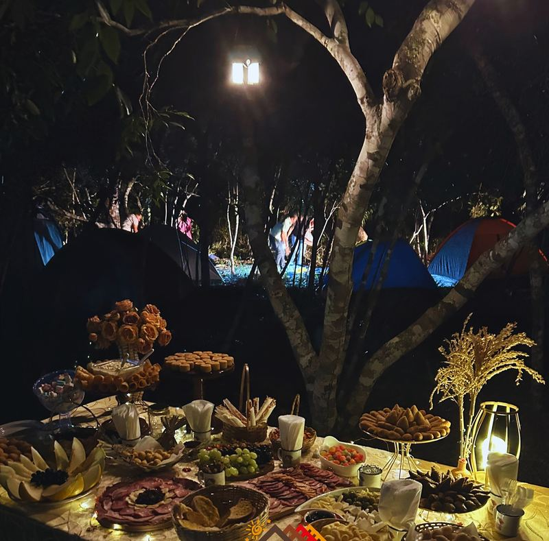
Eventos e encontros
O espaço do camping também é alugado para eventos e para encontros femininos e masculinos.
- Aniversários
- Chá revelação
- Confraternizações
- Reuniões
- Encontros de grupos: femininos, masculinos, de igreja, de escolas
- Reuniões familiares
- Outros pequenos eventos
Para o seu evento, também dá para organizar um café regional sob demanda.
Conte pra gente pelo WhatsApp o tipo de evento, a data e quantas pessoas: a equipe confirma a data e a reserva do espaço.
Preservação
Cerca de 64% da propriedade é preservada — perto de 100 hectares, ou cerca de 1 milhão de m² de área verde.
O Rio Ferro Doido, perene, nasce dentro da propriedade e margeia o Residencial, com faixa de preservação de no mínimo 50 metros na margem.
As ruas do Residencial levam nomes de aves catalogadas na região, com placas que trazem o nome e a imagem da ave — um jeito de aprender e de conservar.
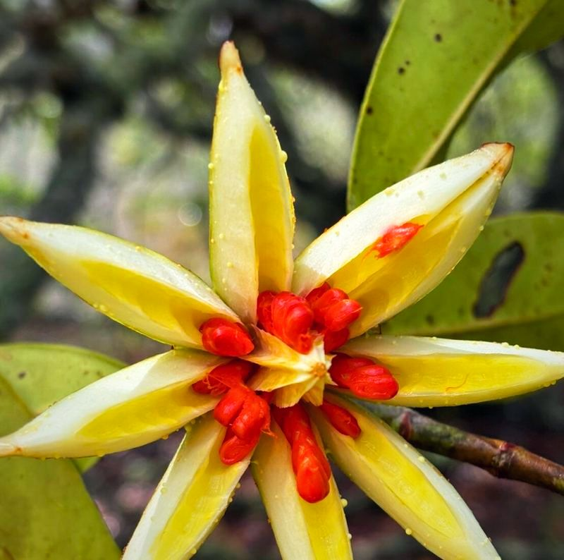
Vem novidade por aí!
Nosso restaurante já está em construção e, em breve, teremos lojinhas, mini-cidade de taipa, chalés, campos de esportes, meliponário e novas experiências rurais.
- Em construçãoRestaurante
- Em breveLojinhascom artigos regionais
- Em breveMini-cidade de taipapara crianças
- Em breveChalés de hospedagemhoje, a hospedagem é a Cabana Sírius
- Em breveCampos de esportesna Fazenda
- Em breveMeliponárioabelhas nativas sem ferrão
- Em breveMini fazendinha
- Em breveOca do Saberoficinas e cursos
- Em breveNovas experiências rurais
No Residencial, estão previstos na planta, e ainda não prontos, parquinhos, horta comunitária, espaços para cultivo de flores e outras áreas de convivência.